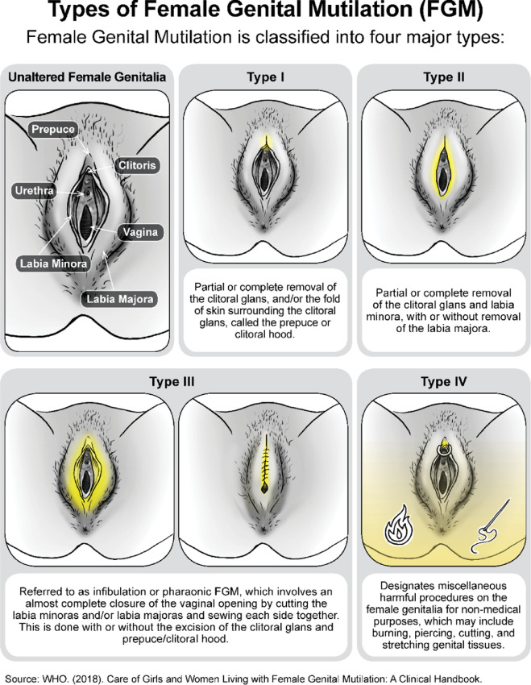

About FGM
Female Genital Mutilation (FGM) consists of procedures that involve the partial or total removal of the external female genitalia (labia, clitoris, labia minora, labia majora) or cutting and sewing the female genital organs for non-medical reasons. FGM is done to young girls to present them as "clean and pure" to their future husbands. It adds no medical benefit but is done to rather prevent premarital sex. The effects of female genital mutilation include severe bleeding, problems urinating, cysts, infections, and complications during childbirth like increased risk of newborn deaths.
Watch this video to learn more.
FGM has severe and long-lasting consequences:
- Severe Bleeding
- Problems Urinating
- Cysts
- Infections
- Complications during Childbirth: Increased risk of newborn deaths and other obstetric complications
FGM is most prevalent in the Middle East and Africa, but it is also practiced in countries such as India, Indonesia, Jordan, and Malaysia. Despite its widespread practice, there is a growing global movement to end this harmful tradition.
Legal Framework and Government Action
- 28 African countries have enacted laws or specific legal provisions against female genital cutting/mutilation.
- African governments have committed to the global goal of ending FGM by 2030, launching a continental drive to accelerate the abandonment of FGM at the community level.
Advocacy and Grassroots Efforts
African women’s rights defenders are actively fighting to protect females at risk of FGM. Many are working under the Solidarity for African Women’s Rights Coalition (SOAWR), advocating for systemic changes and community education.
International Efforts
- In 2020, Burkina Faso submitted a resolution at the UN Human Rights Council on behalf of the group of African States, calling on governments globally to take comprehensive, multisectoral, and rights-based measures to prevent and eliminate FGM.
- Since 2008, UNFPA and UNICEF have led the largest global program to accelerate the elimination of FGM, focusing on 17 countries in Africa and the Middle East while supporting regional and global initiatives.
- On December 20, 2012, the United Nations General Assembly passed a resolution calling on the nations of the world to eliminate FGM, emphasizing the need for global cooperation and commitment.
Call to Action
Ending FGM requires a collaborative effort at all levels of society. We call on:
- Governments: To enforce and strengthen legal frameworks against FGM.
- Communities: To abandon harmful traditions and protect the rights of girls and women.
- Individuals: To raise awareness and support initiatives aimed at ending FGM.
Together, we can ensure a future where no girl or woman suffers from the physical and psychological trauma of FGM. Join us in advocating for the complete eradication of this practice and supporting survivors on their path to healing and empowerment.
Sign Our Petition 📢
We are calling on global leaders to take immediate action against Female Genital Mutilation (FGM). Your voice matters, and your signature can make a difference in the fight for women's and girls' rights. Join us in advocating for a world where FGM is eradicated and every girl has the right to a safe and healthy future. Sign the petition today to show your support and demand change.
Total signatures: 0